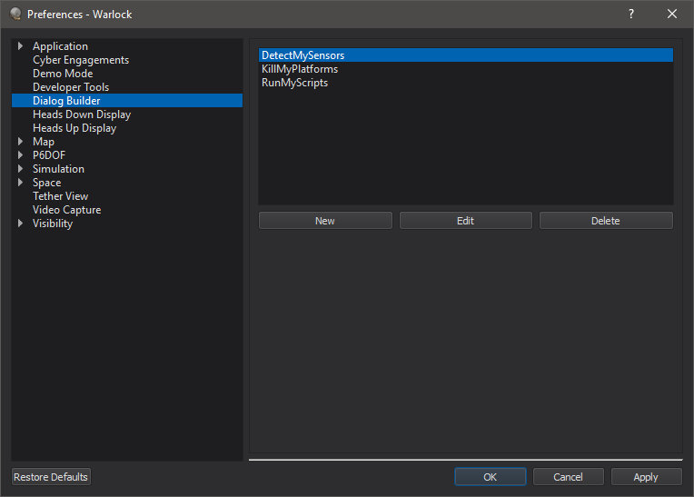
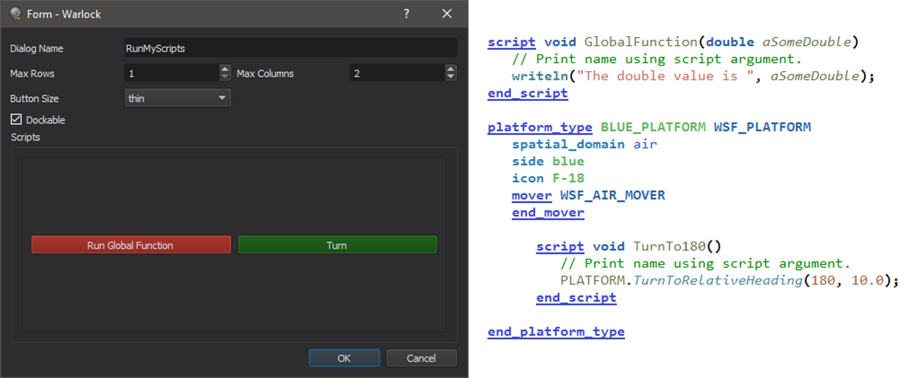
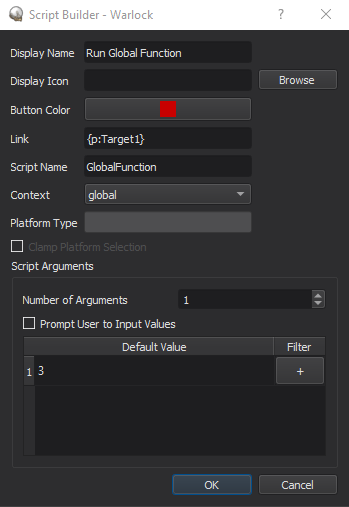
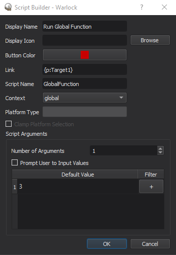
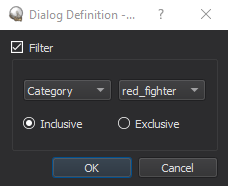
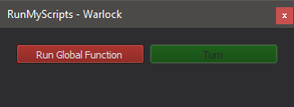
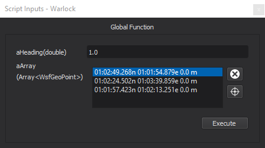
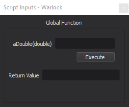

Dialog Builder - Warlock¶
The Warlock Dialog Builder enables users to create custom dialogs that have buttons which execute AFSIM scripts and/or link commands.
The script argument types that are supported include:
bool
int
double
Array<T> where T is any of the above types
Note
For WsfPlatform specifically, an argument of $CURRENT_PLATFORM may be used, which represents the selected platform at the time of the script’s execution.
A custom dialog can be created through the Warlock Preferences. From here, dialogs can be created, edited, and deleted.
When a new dialog is created, it can be given a name of the users choice. The dialog is structured with buttons in a grid layout.
The number of rows and columns may be adjusted by modifying the “Max Rows” and “Max Columns” fields.
The sizes of the buttons may be changed by selecting an option from the “Button Size” drop-down.
{kind=link}
To define a new button, click on the desired grid location. A new dialog will appear to set the button/script parameters.
The button may be given a name, a color, and an icon. The “link” entry can be used to execute link commands (e.g. modifying camera views or selecting entities on the map).
The “Context” drop-down specifies whether the script is defined at the global or platform level. If the context is global the script button is always enabled. If the context is platform, the button will only be enabled when a platform is selected.
Note
Passing parameters with types of WsfSensor, WsfWeapon, and WsfComm (or arrays of these types) is only supported when calling scripts in a platform context.
Selecting ‘platform’ as the context will enable the “Platform Type” input line and the “Clamp Platform Selection” check box. If the platform type is empty, the the script will be active for all platform types.
If a platform type is specified, then the script button will be enabled only when the selected platform is of the specified type.
Most importantly, the “Script Name” entry determines the name of the script the button will execute. The name must match the script name exactly, or nothing will execute when the button is pressed.
If ‘Clamp Platform Selection’ is checked, when a custom script button is pressed the platforms that are selected are permanently tied to the script instance. Changing the selected platforms during a prompt for user input values will not change the platform(s) for which the script executes. If it is unchecked and the selected platform(s) change during a prompt for user input values, the script will execute for the newly selected platforms.
 

{kind=link}
WsfPlatforms and WsfTracks arguments can also be filtered by clicking the “+” button on the desired row. This will open a dialog to choose what to filter by. For WsfPlatforms, this includes side, type, or category. WsfTracks can be filtered by side. Hovering over the “+” button will show the current filter if any. Filters will be saved off in the preferences.
If the filter is inclusive, the selector will only select platforms or tracks that meet the requirements. When it is exclusive, only those that don’t meet the requirements will be selected. Hovering over the selector will show the current filter.
Finally, the number of input arguments and their default values may be set.
Default values for arguments of array types must be semicolon delimited. If “Prompt User to Input Values” is checked, the user will be asked to enter values when the dialog button is pressed.
Once a dialog has been created, it can be made visible by selecting it from the Warlock View menu.
{kind=link}
Once a button in the dialog is pressed, a defined link will execute immediately. The script will execute immediately if “Prompt User to Input Values” was not checked. If it was checked, a script input will appear allowing the user to enter the arguments to the script. Script inputs are consolidated within a dockable widget (see images below) that will be automatically opened when an input prompt is generated. Alternatively, it can be opened through the View Menu.
{kind=link}
Note
Keyboard shortcuts may be defined and utilized in lieu of physically pressing buttons.
For certain argument types (e.g. WsfPlatform, WsfGeoPoint, WsfTrack), the input may be specified by selecting it from the Map Display using the selector tool. Text may be entered directly in lieu of using the selector tool, as long as it is formatted correctly (see the table below).
Argument Type |
Input Format |
|---|---|
WsfGeoPoint |
|
WsfPlatform |
<platform-name> |
WsfTrack |
<platform-name>:<track-number> |
For argument types of WsfSensor, WsfWeapon, and WsfComm, the input may be specified by selecting the part from the dropdown menu. If two or more platforms are selected, the only parts displayed are those the selected platforms have in common.
To add items to an array of simple types, double click near the top of the empty list (next to the variable name) to begin entering elements.
Whenever a value is entered, a new item is automatically created at the next index. The Tab key will advance to the next element in the array. An item can be removed by selecting it and pressing the Delete key.
To add items to an array of complex types (e.g. WsfGeoPoint, WsfTrack, WsfPlatform), use the selector tool to select the desired item from the Map Display.
If no element is currently selected in the array, the selector tool will append the item to the array; otherwise, it will replace the element with the new selection.
To add items to an array of part types (e.g., WsfSensor, WsfWeapon, WsfComm), use Ctrl+click to select the desired items from the list. Using Ctrl+click on a selected item unselects it. Using Shift+click instead of Ctrl+click selects a range of items.
Once all of the inputs are specified, clicking “Execute” will execute the script. If the script returns a value, once the script has finished executing, a dialog will appear showing the return value.
{kind=link}